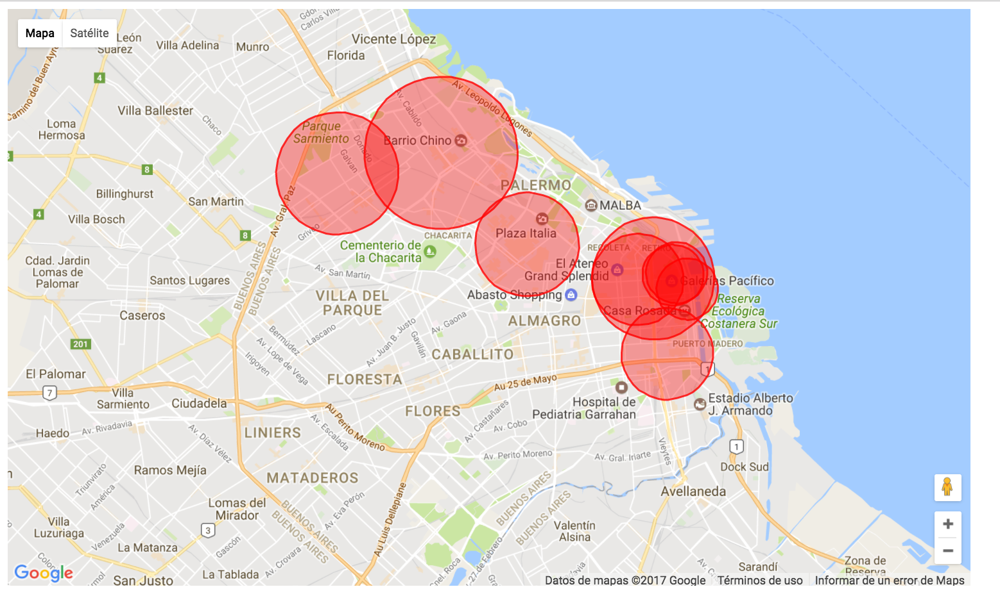
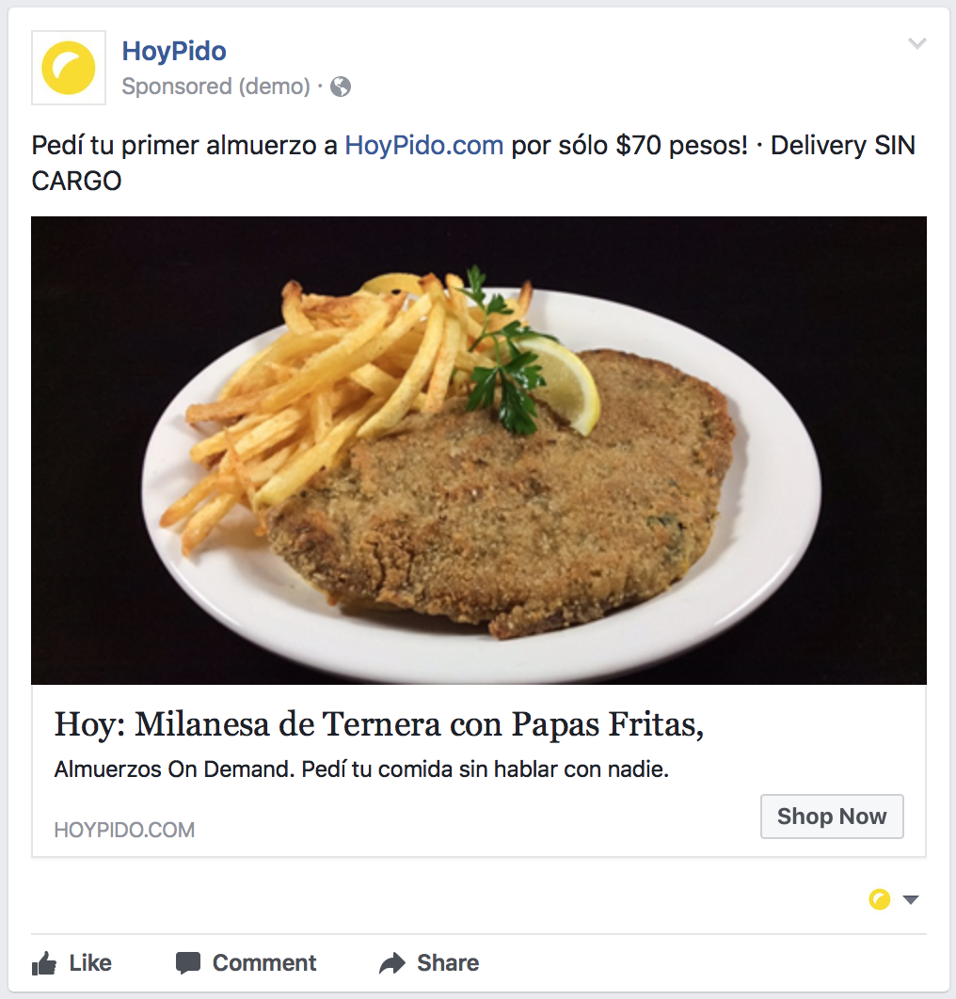
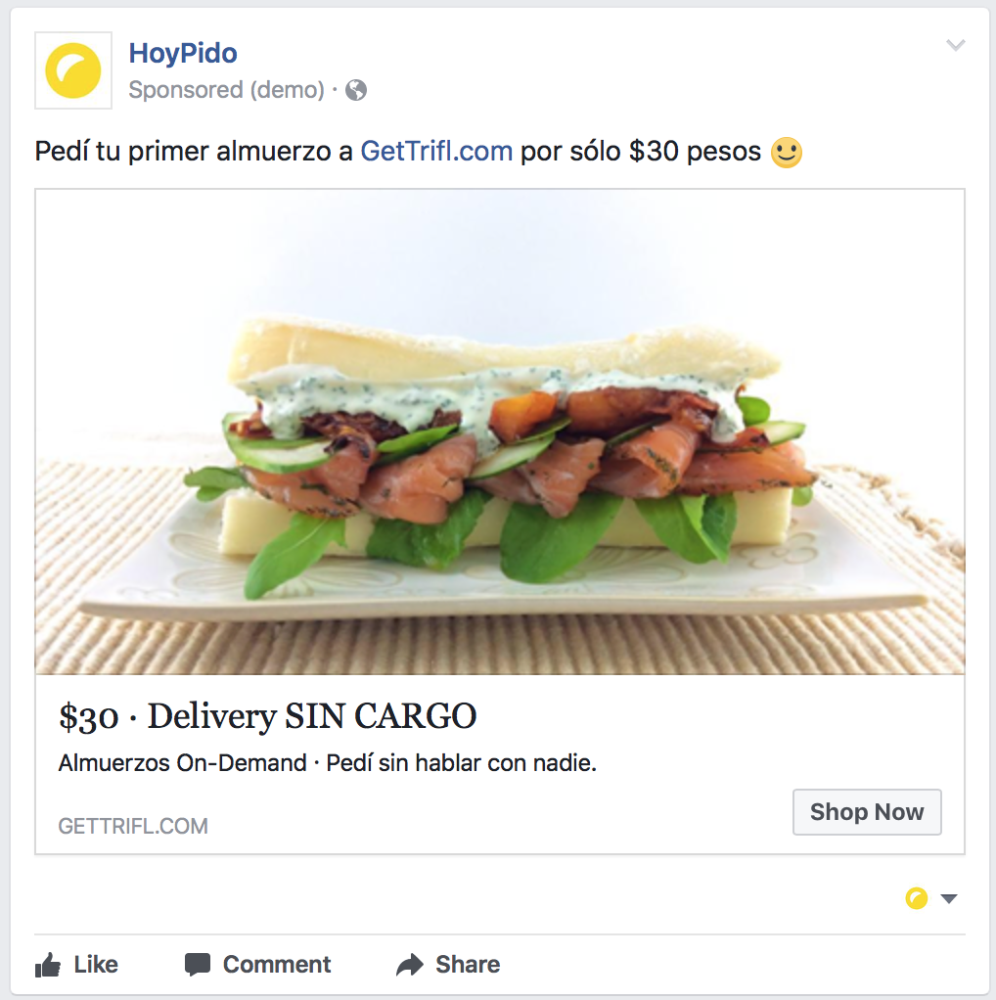
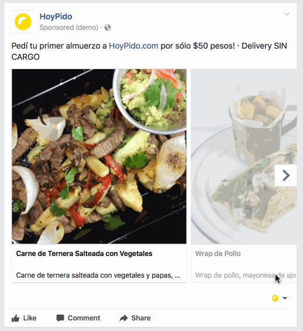

###### Automate Facebook Ads (HoyPido)
## About Me - CTO of HoyPido - Been a programmer for +10 years - Worked on wide range of industries
## About HoyPido - Food delivery service - Reduce offer to improve customer experience - Keep healthy diet by showing statistics and order a week ahead
## Where we started
Kitchens

Ad Example

Ad Example

- Ad showed where there was no coverage - Ad showed dish that is not currently sold - Not showing current menu - Prone to forgetting to end ads - No taking inventory into account - Audience too broad - Too Expensive
### Solution - Create ad when a menu for a kitchen is created - Pause / Activate ad based on kitchen inventory - Replace creative when an item is sold out
Ad Example

### Now some code
### Creating Ad Campaign form = {:form, [name: campaign.name, objective: campaign.objective, status: campaign.status, start_time: campaign.start_time, end_time: campaign.end_time, spend_cap: campaign.spend_cap, access_token: Facebook.access_token, appsecret_proof: Facebook.appsecret_proof ]} HTTPoison.post!("https://graph.facebook.com/v2.6/act_#{Facebook.ad_account}/campaigns", form, @form_header)
### Creating Ad Set form = {:form, [name: adset.name, daily_budget: adset.daily_budget, campaign_id: adset.campaign.id, is_autobid: adset.is_autobid, billing_event: adset.billing_event, start_time: adset.campaign.start_time, end_time: adset.campaign.end_time, lifetime_budget: adset.lifetime_budget, pacing_type: Poison.encode!(adset.pacing_type), promoted_object: Poison.encode!(adset.promoted_object), targeting: Poison.encode!(adset.targeting), access_token: Facebook.access_token, appsecret_proof: Facebook.appsecret_proof ]} HTTPoison.post!("https://graph.facebook.com/v2.6/act_#{Facebook.ad_account}/adsets", form, @form_header)
### Creating Ad Creative form = {:form, [name: adcreative.name, object_story_spec: Poison.encode!(adcreative.object_story_spec), access_token: Facebook.access_token, appsecret_proof: Facebook.appsecret_proof ]} HTTPoison.post!("https://graph.facebook.com/v2.6/act_#{Facebook.ad_account}/adcreatives", form, @form_header, recv_timeout: 30_000)
### Creating Ad form = {:form, [name: ad.name, adset_id: ad.adset.id, creative: Poison.encode!(%{creative_id: ad.creative.id}), status: ad.status, access_token: Facebook.access_token, appsecret_proof: Facebook.appsecret_proof ]} HTTPoison.post!("https://graph.facebook.com/v2.6/act_#{Facebook.ad_account}/ads", form, @form_header)
### Pausing Ad ``` def update_status(id, status) do form = {:form, [status: status, access_token: Facebook.access_token, appsecret_proof: Facebook.appsecret_proof ]} HTTPoison.post!("https://graph.facebook.com/v2.6/#{id}", form, @form_header) status end ```
### Results - Eliminate user complaints for ads that shown item not being sell - Reduce ad cost by 3x - CPC reduced by half
### Issues - Need to be Marketing Partner to avoid Rate Limiter - Cannot modify ads on real time because of rate limiter
### Thank you ###### Links - https://developers.facebook.com/docs/marketing-apis - https://developers.facebook.com/docs/marketing-api/reference/ad-creative